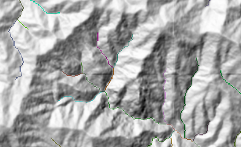

DEM(数値標高モデル)からの水系図作成¶
ここでは、数値標高モデルのデータから水系図の作成を行います。
以下の2つの方法を説明します。
QGISを経由してGRASS GISのモジュールを利用する
PythonからGRASS GISのモジュールを利用する
どちらも、GRASS GISのr.watershedというモジュールを利用して水系図を作成します。GRASS GISは独自のデータベース構造を持つため、はじめは仕組みを理解することが難しいかもしれませんが、ラスタデータやベクタデータを扱う多くのライブラリがあり、リモートセンシングやGISの解析に非常に有用なツールです。QGISを経由してGRASSのモジュールを利用することで、比較的簡易にそれらのツールを利用することができるようになります。また、Pythonを使う方法を利用すると、バッチ処理やほかのPython処理とスムーズに結合することができるようになります。
まずはQGISを使った方法を説明します。
事前に、OSGeo4Wからネットワークインストーラーをダウンロードして、QGIS Desktop with GRASSが使えるようにしておいてください。インストールの設定は、エクスプレスインストールを選択し、すべてデフォルトの設定で大丈夫です。
データは笛吹川上流域のSRTM DEMデータを利用します。SRTMデータはWGS84の地理座標系で提供されています。事前にUTM座標系に変換したものを準備したので、ここからダウンロードしてdataフォルダに保存してください。
QGISを用いた方法¶
スタートメニューから、QGISを検索し、QGIS Desktop with GRASSを起動してください。with GRASS表記がないものでは以下は動きません。

ダウンロードしたdem_fuefuki.tifをQGISにドラッグ＆ドロップしてデータを読み込みます。読み込まれたデータはLayersパネルに一覧が表示されます。Layersパネルが表示されていない場合、View → PanelsメニューからLayersをオンにしてください。また、同じメニューから、Processing Tool Boxのパネルも表示してください。
GRASS GISモジュールの実行¶
Processing Toolboxから、GRASS GISやSAGA GISなどのほかのフリーのGISソフトが提供するツール群を利用することができます。Processing Toolboxの検索ボックスに“water”と入れて表示される“r.watershed”モジュールを起動してください。

モジュールに以下の設定を行い、Runを押して実行してください。記載のない項目はすべてデフォルトの値です。
Elevation : dem_fuefuki [EPSG:32654]
Minimum size of exterior watershed basin [optional] : 1000
上記のオプションで最小面積が\(1000m^2\)となるような集水域図が作成されます。 ログメッセージが表示後、モジュールの実行が完了します。モジュールウィンドウは閉じてください。
結果¶
Layersパネルに計算されたラスターデータが追加されます。
作成されたラスタについて、以下で説明します。図はDEMから作成した陰影図を重ね合わせています。
Unique label for each watershed basin¶

Half-basins¶
Number of cells that drain through each cell¶
各ピクセルより上流にあるピクセルの数を表します。ピクセルサイズと掛け合わせることで、各ピクセルにおける集水域の面積となります。入力DEMの範囲外から流入する地域については値が負になっています。

Stream segments¶
河川の位置を表します。各河川は集水域のIDに対応するID値を持ちます。GRASSのr.to.vectモジュールの入力として与えることで、ベクターデータ(shapefile)として出力できます。


Stream power index a * tan(b)¶
各地点における水が流下する力を示します。各ピクセルにおける単位等高線あたりの集水面積を\(\alpha\)、各地点での傾斜角度を\(\beta\)としたとき、\(\alpha \times tan(\beta)\)と定義されるStream Power Index(SPI)と呼ばれる指標です。(Moore et al. 1991)

Slope length and steepness (LS) factor for USLE¶
Revised Universal Soil Loss Equation (RUSLE)におけるLSの値(傾斜長および傾斜度)を示します。

Slope steepness (S) factor for USLE¶
Revised Universal Soil Loss Equation (RUSLE)におけるSの値(傾斜度)を示します。
結果の保存¶
Layerウィンドウ内でレイヤの右側に 表示があるレイヤはQGISの一時ファイルに保存されています。GRASSモジュールを実行する際に計算結果の保存先を指定しなかった場合、デフォルトで一時ファイルに保存されます。これらはQGISを終了した際に削除されてしまうので、QGISを閉じる前にGeoTiffファイルとして保存してください。保存方法は、保存したいレイヤを右クリック、Export -> Save as…
で表示されるダイヤログにおいて、フォーマットと保存先フォルダを指定します。その他の設定項目はデフォルト値で大丈夫です。ラスタがファイルに保存され、QGISのレイヤにも追加されます。
表示があるレイヤはQGISの一時ファイルに保存されています。GRASSモジュールを実行する際に計算結果の保存先を指定しなかった場合、デフォルトで一時ファイルに保存されます。これらはQGISを終了した際に削除されてしまうので、QGISを閉じる前にGeoTiffファイルとして保存してください。保存方法は、保存したいレイヤを右クリック、Export -> Save as…
で表示されるダイヤログにおいて、フォーマットと保存先フォルダを指定します。その他の設定項目はデフォルト値で大丈夫です。ラスタがファイルに保存され、QGISのレイヤにも追加されます。
以上でQGISを通じたGRASSモジュールによる集水域図を作成することができました。
PythonからGRASSモジュールを利用する¶
GRASS GISは独自のデータベースを使って計算を行います。Geotiffやシェープファイルなどの一般的なファイルは、初めにGRASSデータベースへ登録する必要があります。
各種の計算は、GRASSデータベースに登録されたデータに対して行われ、計算結果もデータベースに登録されます。
計算の成果物となるラスタデータやベクタデータはこのGRASSデータベース上にあるため、GeotiffやShapefile等の一般的なファイルとしてとりだす作業も必要になります。
上記のQGISを用いたGRASSモジュールの利用では、これらの操作がバックグラウンドで自動で行われます。
GRASS GISはもともとBashターミナルからの操作を想定して設計されたプログラムですが、GRASS GIS 7.8以降ではPythonからの利用が非常にしやすくなりました。
以降では、GRASSが提供するPythonインターフェースを用いて、Jupyter Notebook上でGRASS GISを利用してみます。 参考リンク
Windows 10のパソコンから利用する場合、Jupyter Notebookと環境構築を参考にPython環境をセットアップしてください。残念ながら、Google CodelaboratoryではGRASSのバージョンが古いため、以降のコマンドは動きません。
Python環境が設定出来たら、ターミナルから以下のコマンドを実行し、GRASS GISをインストールします。15分ほどかかります。
# Ubuntuのパスワード入力が必要
sudo apt install grass
GRASSのバージョンは7.8以上であることを以下のコマンドで確認してください。
grass --version
Jupyter Notebookからは以下のように確認することもできます。
[3]:
!grass --version
GRASS GIS 7.8.2
Geographic Resources Analysis Support System (GRASS) is Copyright,
1999-2019 by the GRASS Development Team, and licensed under terms of the
GNU General Public License (GPL) version >=2.
This GRASS GIS 7.8.2 release is coordinated and produced by
the GRASS Development Team with contributions from all over the world.
This program is distributed in the hope that it will be useful, but
WITHOUT ANY WARRANTY; without even the implied warranty of
MERCHANTABILITY or FITNESS FOR A PARTICULAR PURPOSE. See the GNU
General Public License for more details.
また、PythonからGRASS GISを使うために必要なgrass-sessionというライブラリをインストールしてください。
pip install grass-session
Jupyter Notebookファイルと同じフォルダにdata/watershed/フォルダを作成し、解析対象のDEMファイルを保存してください。
まずは必要なライブラリのインポートとパラメータを設定します。
[10]:
from grass_session import Session
from grass.script import core as gcore
import os
data_dir = os.path.join('data', 'watershed')
raster_path = os.path.join(data_dir, 'dem_fuefuki.tif')
gisdb_path = os.path.join(data_dir, 'grass_db')
location = 'fuefuki'
mapset = 'PERMANENT'
GRASSデータベースを作成します。データベースの作成には、扱うGISデータの座標系や空間的な範囲を設定する必要がありますが、これらはdem_fuefuki.tifファイルをもとに作成します。また、データベースの作成と同時にデータベースにdem_fuefuki.tifを登録します。
[9]:
with Session(gisdb=gisdb_path,
location=location,
mapset=mapset,
create_opts=raster_path):
# import geotiff to PERMANENT mapset and change extent
gcore.run_command('r.in.gdal',
flags='oe',
input=raster_path,
band=1,
output='dem',
overwrite=True)
データベースにdemという名前でdem_fuefuki.tifファイルが登録されました。
次に、登録されたdemというラスタデータに対して、GRASSのr.watershedモジュールを適用します。
[11]:
# create a new location from raster file
with Session(gisdb=gisdb_path,
location='fuefuki',
mapset='PERMANENT'):
# Run r.watershed command
gcore.run_command('r.watershed',
elevation='dem',
threshold=1000,
accumulation='accumulation',
drainage='drainage',
basin='basin',
stream='stream',
half_basin='half_basin',
length_slope='length_slope',
slope_steepness='slope_steepness',
tci='tci',
spi='spi',
overwrite=True)
# List up created rasters
print(gcore.read_command('g.list',
type='rast'))
accumulation
basin
dem
drainage
half_basin
length_slope
slope_steepness
spi
stream
tci
r.watarshedコマンドのオプションは、今回QGISで実行したものと同じ値としました。各オプションの詳細はGRASS GISの公式ドキュメントを参照してください。
r.watarshedコマンドに続いて、g.listコマンドを実行し、作成したラスタデータの一覧を表示しています。
grass.scriptのcore.run_command()とcore.read_command()との違いは、単純にGRASSのモジュールを動かす場合はrun_command()、GRASSモジュールの標準出力を文字列でとってきたいときはread_command()を利用します。詳細はGRASS GISの公式wikiに開設があります。
続いて、データベース内に生成されたラスタデータをGeotiffファイルとして抽出します。GRASSのデータベースからラスタデータをファイルとして取り出すには、r.out.gdalモジュールを利用します。
[5]:
with Session(gisdb=gisdb_path,
location='fuefuki',
mapset='PERMANENT'):
gcore.run_command('r.out.gdal',
flags='mt',
input='accumulation',
output=os.path.join(data_dir, 'accumulation.tif'),
format='GTiff',
createopt='TFW=YES,COMPRESS=LZW',
overwrite=True)
accumurationの所を、basinやdrainageに変更することで、そのほかの生成されたラスタデータをファイルとして取り出すことができます。